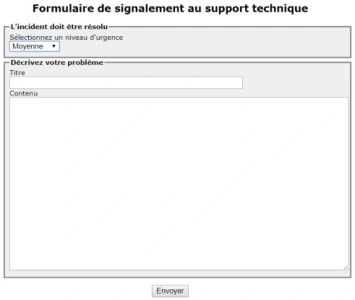
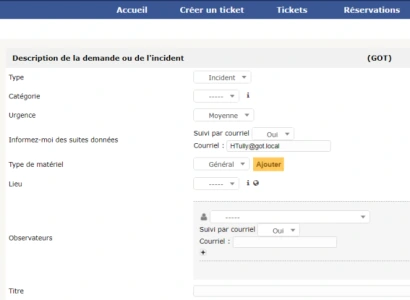
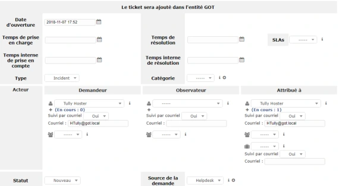
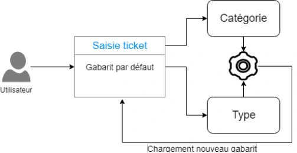
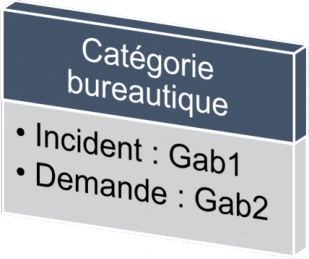
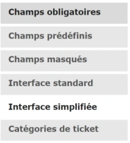
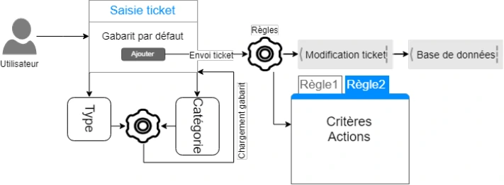
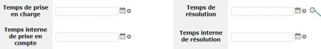
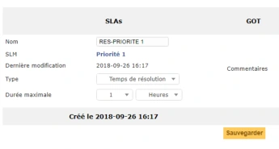
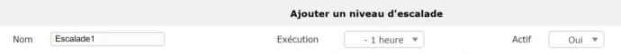

Module 04 — Assistance et traitements automatisés des tickets¶
La transcription du support Drive et l’aide pédagogique sont séparées pour rendre leur provenance explicite.
SOURCE DRIVE · TRANSCRIPTION DU SUPPORT
Le contenu des documents du dossier TSSR est transcrit ci-dessous, page par page. Les textes et tableaux sont intégrés à la page Web. Aucun fichier PDF, aucune diapositive entière ni aucune reproduction de page n’est affiché. Seuls des croquis ou visuels isolés et vérifiés peuvent accompagner la transcription. Les versions et les consignes restent celles des supports de formation. Les compléments IA sont conservés dans leur onglet distinct.
Support · Module 04 - Support de cours · 10 pages transcrites
Administration GLPI
Module 04 – Assistance – Traitements automatisés des tickets
Objectifs
- Le suivi opérationnel par des tickets
- Les différentes solutions pour créer un ticket
- Les gabarits de ticket : personnalisation du masque de saisie
- Déclencheurs du chargement d’un gabarit de ticket
- Les règles métiers pour modifier dynamiquement un ticket
- La gestion des niveaux de services (SLA)
- Ordre de création pour un traitement automatisé
Rappels sur les tickets
Le ticket
- Dans le monde de l’informatique, tout fonctionne à base de ticket
- Il va permettre de solliciter le centre de service
- Un ticket passera par plusieurs statuts : c’est le cycle de vie d’un ticket
- Il peut être de type « incident » ou « demande »
- Il doit compter un minimum d’informations
Répartition des
Traçabilité Détection des
tâches Communication
problèmes
Utilisation d’un outil de gestion de ticket
Flux d'entrée
Trois façons de créer un ticket
- Interface d’ouverture de tickets anonymes
- Interface simplifiée
- Interface standard Depuis GLPI
- Envoi d’un mail dans une boîte mail support
- Configuration d’un collecteur Mail
- Création du ticket par téléphone
- Utilisation de l’interface standard par le technicien Téléphone
Création ticket : interface anonyme
- http(s)://<@glpi>/front/helpdesk.html
- Aucune authentification requise
- Possibilité de désactivation
- Personnalisation possible : HTML/CSS
- Par défaut, rattaché à l’entité racine


Création ticket : interface simplifiée
- Accessible après authentification
- Formulaire à compléter et géré par un gabarit
- Si une délégation est configurée, possibilité de sélectionner un utilisateur
- Ajout possible de document (imprime écran, manuel, etc.)
- Suivi par mail possible
- Association possible des CI concernés
- Récapitulatif de tous ses tickets depuis l’accueil
Création ticket : interface standard
- Assistance => Tickets =>
- Ticket par téléphone
- Utilisé par le support N1 et N2
- Accès à plus d’éléments
- Vu en détail par la suite




Gabarits de ticket
Le gabarit : généralités
- Personnalisation de l’interface de saisie d’un ticket en fonction du type et d’une catégorie de ticket
- Interface standard et simplifiée
- Champs obligatoires
- Champs masqués
- Champs prédéfinis
- Notion de gabarit par défaut
- Accessibles depuis le menu listant les tickets
Le gabarit : fonctionnement
Le gabarit : création
- Assistance => Tickets =>
- Attention à l’entité active : récursivité possible
- Personnalisation visuelle
- Rendu côté utilisateur
- Liaison avec catégorie / type
- Depuis la catégorie






Le gabarit : bonnes pratiques
- On commence par créer ses différentes catégories
- Création des gabarits nommés ainsi : « catégorie-type »
- Jusqu’à deux gabarits par catégorie (incidents et demandes)
- Liaison entre les gabarits et les catégories pour chaque type
- On évite au maximum d’inclure dans le gabarit le paramétrage du ticket (priorité, SLA, etc.)
- Gabarit uniquement pour le visuel
- Utilisation de règles métier pour la configuration du ticket
Règles métier pour les tickets
- « Administration => règles »
- Permettre une configuration automatisée des tickets saisis
- Maintenance simplifiée : configuration centralisée au travers de règles


Règles métier pour les tickets
- Règles uniquement lues à la création du ticket
- Toutes les règles sont interprétées
- Importance de l’ordre => Champs concurrent
- Critères : permettre d’identifier les tickets *
- Type
- Catégorie
- Actions : définir des champs hors de portée de l’utilisateur *
- Priorité
- Techniciens / groupes de techniciens
- SLA
- etc.
* Donnés à titre d’exemples
Niveaux de services
- Objectif : attribuer un temps de résolution ou de prise en charge
- Saisie manuelle d’une date/heure ou utilisation des objets SLA sous GLPI
- Attribution des objets SLA manuelle ou automatique via des règles
Sélection d’un SLA
Priorité SLA
1 2h
2 8h
3 2j Calcul effectué en fonction du calendrier de travail


Niveaux de services : objets SLA
- « Configuration => Niveaux de services »
- Doivent être facilement identifiables
- Le type : temps de résolution/prise en charge
- La durée max de résolution souhaitée
- Possibilité de créer des niveaux d’escalades
Dépasser la date butoir de résolution n’est pas bloquant, juste informatif
Niveaux de services
- Permettre une modification automatisée du ticket pendant son cycle de vie
- Se configure à travers des objets SLA qu’on applique à un ticket
- Identifiable par un nom
- Configuration d’un déclencheur temporelle par rapport au temps de résolution
- Vont ensuite s’appuyer sur des critères (optionnels) pour réaliser des actions
- Critères et actions applicables aux différents champs du ticket




Ordre de création
- Matériel
- Logiciel => Bureautique
- Logiciel => Infographiste Créer les catégories de ticket
lier aux catégories suivant le type
- Personnalisation de l’interface
- Champs obligatoires
- Champs masqués Créer les gabarits de ticket puis les
- Temps de prise en charge
- Temps de résolution Créer les SLAs
- Critère (catégories, type, temps restant…)
- Action (élévation de priorité, affection à un niveau supérieur…) Créer les escalades de SLAs
- Critère (type (incident, demande), catégorie de ticket)
- Action (affectation technicien, SLA, priorité…) Créer les règles métier
pour les tickets
Assistance – Traitements automatisés des tickets
Ordre de création
• Matériel
Créer les catégories de ticket • Logiciel => Bureautique
• Logiciel => Infographiste
Créer les gabarits de ticket puis les • Personnalisation de l’interface • Champs obligatoires
lier aux catégories suivant le type • Champs masqués
Créer les SLAs •• TempsTemps dede résolutionprise en charge
Créer les escalades de SLAs •• CritèreAction (élévation(catégories,detype,priorité,tempsaffectionrestant…)à un niveau supérieur…)
Créer les règles métier • Critère (type (incident, demande), catégorie de ticket)
pour les tickets • Action (affectation technicien, SLA, priorité…)
19Référence du document : 1FpyeKf-53BHRTG1_lWgd5AZEkFTlvBLP · SHA-256 c0540fd062bffa26…
Complément IA / externe au cours — fiche pédagogique du portail
Cette fiche contient une reformulation et des aides d’apprentissage rédigées par IA. Elle est distincte de la transcription des documents du Drive et ne la remplace pas. Les schémas de synthèse de cette fiche sont des illustrations IA / externes au cours, sauf les captures explicitement attribuées à un document source.
Les parties ci-dessous reprennent le cours original, dans le même ordre. Les encadrés et les schémas répètent ses formulations.
Parcours de lecture¶
- Support · Module 04 - Support de cours · 10 pages transcrites
Visuel externe
Illustration IA / externe au cours — schéma pédagogique de synthèse.
SOURCE DRIVE · TRANSCRIPTION DU SUPPORT
Le contenu des documents du dossier TSSR est transcrit ci-dessous, page par page. Les textes et tableaux sont intégrés à la page Web. Aucun fichier PDF, aucune diapositive entière ni aucune reproduction de page n’est affiché. Seuls des croquis ou visuels isolés et vérifiés peuvent accompagner la transcription. Les versions et les consignes restent celles des supports de formation. Les compléments IA sont conservés dans leur onglet distinct.
Support · Module 04 - Support de cours · 10 pages transcrites¶
Administration GLPI¶
Module 04 – Assistance – Traitements automatisés des tickets¶
Objectifs¶
Visuel externe
Illustration IA / externe au cours — schéma pédagogique de synthèse.
- Le suivi opérationnel par des tickets
-
Les différentes solutions pour créer un ticket
-
Les gabarits de ticket : personnalisation du masque de saisie
- Déclencheurs du chargement d’un gabarit de ticket
- Les règles métiers pour modifier dynamiquement un ticket
- La gestion des niveaux de services (SLA)
- Ordre de création pour un traitement automatisé
Rappels sur les tickets¶
Le ticket¶
À retenir
Dans le monde de l’informatique, tout fonctionne à base de ticket Il va permettre de solliciter le centre de service Un ticket passera par plusieurs statuts : c’est le cycle de vie d’un ticket Il peut être de type « incident » ou « demande » Il doit compter un minimum d’informations
Visuel externe
Illustration IA / externe au cours — schéma pédagogique de synthèse.
- Dans le monde de l’informatique, tout fonctionne à base de ticket
-
Il va permettre de solliciter le centre de service
-
Un ticket passera par plusieurs statuts : c’est le cycle de vie d’un ticket
- Il peut être de type « incident » ou « demande »
- Il doit compter un minimum d’informations
Répartition des¶
Traçabilité Détection des¶
tâches Communication¶
problèmes¶
Utilisation d’un outil de gestion de ticket¶
Flux d'entrée¶
Trois façons de créer un ticket¶
À retenir
Interface d’ouverture de tickets anonymes Interface simplifiée Interface standard Depuis GLPI Envoi d’un mail dans une boîte mail support Configuration d’un collecteur Mail Création du ticket par téléphone Utilisation de l’interface standard par le technicien Téléphone
Visuel externe
Illustration IA / externe au cours — schéma pédagogique de synthèse.
- Interface d’ouverture de tickets anonymes
- Interface simplifiée
-
Interface standard Depuis GLPI
-
Envoi d’un mail dans une boîte mail support
-
Configuration d’un collecteur Mail
-
Création du ticket par téléphone
- Utilisation de l’interface standard par le technicien Téléphone
Création ticket : interface anonyme¶
À retenir
http(s)://<@glpi>/front/helpdesk.html Aucune authentification requise Possibilité de désactivation Personnalisation possible : HTML/CSS Par défaut, rattaché à l’entité racine Visuel isolé — Module 04 - Support de cours
Visuel externe
Illustration IA / externe au cours — schéma pédagogique de synthèse.
- http(s)://<@glpi>/front/helpdesk.html
-
Aucune authentification requise
-
Possibilité de désactivation
- Personnalisation possible : HTML/CSS
- Par défaut, rattaché à l’entité racine
Visuel isolé — Module 04 - Support de cours
Création ticket : interface simplifiée¶
- Accessible après authentification
- Formulaire à compléter et géré par un gabarit
- Si une délégation est configurée, possibilité de sélectionner un utilisateur
- Ajout possible de document (imprime écran, manuel, etc.)
- Suivi par mail possible
- Association possible des CI concernés
- Récapitulatif de tous ses tickets depuis l’accueil
Création ticket : interface standard¶
À retenir
Assistance => Tickets => Ticket par téléphone Utilisé par le support N1 et N2 Accès à plus d’éléments Vu en détail par la suite Visuel isolé — Module 04 - Support de cours Visuel isolé — Module 04 - Support de cours
- Assistance => Tickets =>
-
Ticket par téléphone
-
Utilisé par le support N1 et N2
- Accès à plus d’éléments
- Vu en détail par la suite
Visuel isolé — Module 04 - Support de cours
Visuel isolé — Module 04 - Support de cours
Gabarits de ticket¶
Le gabarit : généralités¶
À retenir
Personnalisation de l’interface de saisie d’un ticket en fonction du type et d’une catégorie de ticket Interface standard et simplifiée Champs obligatoires Champs masqués Champs prédéfinis Notion de gabarit par défaut Accessibles depuis le menu listant les tickets
- Personnalisation de l’interface de saisie d’un ticket en fonction du type et d’une catégorie de ticket
-
Interface standard et simplifiée
-
Champs obligatoires
- Champs masqués
- Champs prédéfinis
- Notion de gabarit par défaut
- Accessibles depuis le menu listant les tickets
Le gabarit : fonctionnement¶
Le gabarit : création¶
À retenir
Assistance => Tickets => Attention à l’entité active : récursivité possible Personnalisation visuelle Rendu côté utilisateur Liaison avec catégorie / type Depuis la catégorie Visuel isolé — Module 04 - Support de cours Visuel isolé — Module 04 - Support de cours Visuel isolé — Module 04 - Support de cours
Attention
Assistance => Tickets => Attention à l’entité active : récursivité possible Personnalisation visuelle Rendu côté utilisateur Liaison avec catégorie / type Depuis la catégorie Visuel isolé — Module 04 - Support de cours Visuel isolé — Module 04 - Support de cours Visuel isolé — Module 04 - Support de cours
- Assistance => Tickets =>
-
Attention à l’entité active : récursivité possible
-
Personnalisation visuelle
-
Rendu côté utilisateur
-
Liaison avec catégorie / type
- Depuis la catégorie
Visuel isolé — Module 04 - Support de cours
Visuel isolé — Module 04 - Support de cours
Visuel isolé — Module 04 - Support de cours
Le gabarit : bonnes pratiques¶
- On commence par créer ses différentes catégories
- Création des gabarits nommés ainsi : « catégorie-type »
- Jusqu’à deux gabarits par catégorie (incidents et demandes)
-
Liaison entre les gabarits et les catégories pour chaque type
-
On évite au maximum d’inclure dans le gabarit le paramétrage du ticket (priorité, SLA, etc.)
-
Gabarit uniquement pour le visuel
- Utilisation de règles métier pour la configuration du ticket
Règles métier pour les tickets¶
À retenir
« Administration => règles » Permettre une configuration automatisée des tickets saisis Maintenance simplifiée : configuration centralisée au travers de règles Visuel isolé — Module 04 - Support de cours
- « Administration => règles »
-
Permettre une configuration automatisée des tickets saisis
-
Maintenance simplifiée : configuration centralisée au travers de règles
Visuel isolé — Module 04 - Support de cours
Règles métier pour les tickets¶
- Règles uniquement lues à la création du ticket
- Toutes les règles sont interprétées
- Importance de l’ordre => Champs concurrent
- Critères : permettre d’identifier les tickets *
- Type
- Catégorie
- Actions : définir des champs hors de portée de l’utilisateur *
- Priorité
- Techniciens / groupes de techniciens
- SLA
- etc.
* Donnés à titre d’exemples¶
Niveaux de services¶
- Objectif : attribuer un temps de résolution ou de prise en charge
-
Saisie manuelle d’une date/heure ou utilisation des objets SLA sous GLPI
-
Attribution des objets SLA manuelle ou automatique via des règles
Sélection d’un SLA¶
Priorité SLA¶
1 2h¶
2 8h¶
3 2j Calcul effectué en fonction du calendrier de travail¶
Visuel isolé — Module 04 - Support de cours
Niveaux de services : objets SLA¶
-
« Configuration => Niveaux de services »
-
Doivent être facilement identifiables
-
Le type : temps de résolution/prise en charge
-
La durée max de résolution souhaitée
- Possibilité de créer des niveaux d’escalades
Dépasser la date butoir de résolution n’est pas bloquant, juste informatif¶
Niveaux de services¶
- Permettre une modification automatisée du ticket pendant son cycle de vie
-
Se configure à travers des objets SLA qu’on applique à un ticket
-
Identifiable par un nom
- Configuration d’un déclencheur temporelle par rapport au temps de résolution
- Vont ensuite s’appuyer sur des critères (optionnels) pour réaliser des actions
- Critères et actions applicables aux différents champs du ticket
Visuel isolé — Module 04 - Support de cours
Visuel isolé — Module 04 - Support de cours
Ordre de création¶
- Matériel
- Logiciel => Bureautique
- Logiciel => Infographiste Créer les catégories de ticket
lier aux catégories suivant le type¶
- Personnalisation de l’interface
- Champs obligatoires
-
Champs masqués Créer les gabarits de ticket puis les
-
Temps de prise en charge
-
Temps de résolution Créer les SLAs
-
Critère (catégories, type, temps restant…)
-
Action (élévation de priorité, affection à un niveau supérieur…) Créer les escalades de SLAs
-
Critère (type (incident, demande), catégorie de ticket)
- Action (affectation technicien, SLA, priorité…) Créer les règles métier
pour les tickets¶
Assistance – Traitements automatisés des tickets
Ordre de création
• Matériel
Créer les catégories de ticket • Logiciel => Bureautique
• Logiciel => Infographiste
Créer les gabarits de ticket puis les • Personnalisation de l’interface • Champs obligatoires
lier aux catégories suivant le type • Champs masqués
Créer les SLAs •• TempsTemps dede résolutionprise en charge
Créer les escalades de SLAs •• CritèreAction (élévation(catégories,detype,priorité,tempsaffectionrestant…)à un niveau supérieur…)
Créer les règles métier • Critère (type (incident, demande), catégorie de ticket)
pour les tickets • Action (affectation technicien, SLA, priorité…)
19
Référence du document : 1FpyeKf-53BHRTG1_lWgd5AZEkFTlvBLP · SHA-256 c0540fd062bffa26…
M04 — Assistance et traitements automatisés des tickets
20 questions
Teste tes connaissances sur ce module.